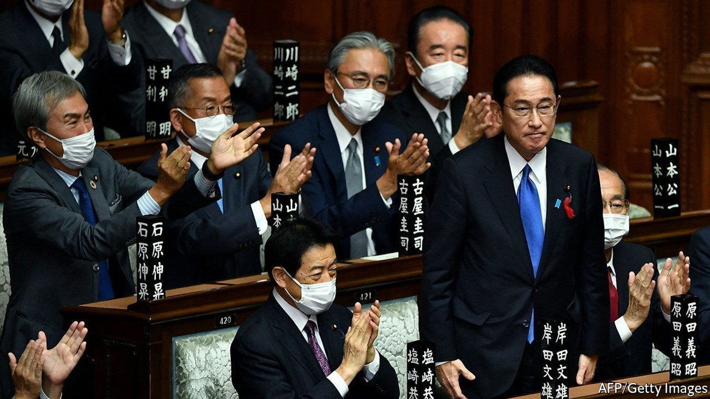
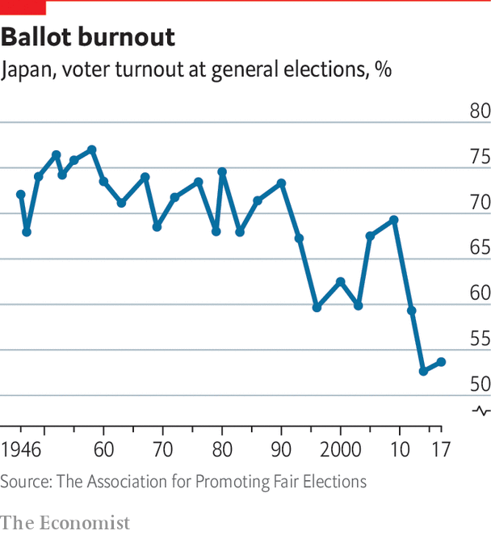

The party has been in power almost continuously since 1955. That does not mean voters are happy

SINCE ITS FOUNDING in 1955, Japan’s Liberal Democratic Party (LDP) has dominated the country’s politics. The party has ruled uninterrupted, save two brief stints in 1993 to 1994 and 2009 to 2012. Since regaining power in 2012, the LDP and its smaller coalition partner, Komeito, have won six consecutive national elections. When voters go to the polls in a lower-house ballot on October 31st, the LDP is likely to come out on top again. This comes not in an authoritarian system, but in a democracy with free and fair elections. How does the LDP keep such a firm grip on power?
The LDP emerged in the wake of America’s post-war occupation of Japan and in the crucible of the cold war. After leftist forces united into a single Japan Socialist Party in 1955, Japanese conservatives, with a push from America’s CIA, decided to merge the two main conservative parties: the Liberal Party and the Japan Democratic Party. The new LDP established the upper hand, and went on to oversee Japan’s economic growth miracle. It also benefited from a favourable electoral system skewed towards the rural areas where party influence was strong. Factions inside the party’s big tent competed, with regime change coming from within; political pork helped grease the electoral wheels. This stretch of LDP dominance, known as the “1955 system”, ended in 1993, when a group of LDP heavyweights broke with the party and formed an alternative coalition government with opposition parties. The renegade coalition disintegrated the next year, but not before passing an electoral reform that paved the way for the subsequent emergence of the Democratic Party of Japan (DPJ), whose victory over the LDP in 2009 seemed to augur an era of true inter-party competition.
In power, however, the DPJ struggled to implement policies, alienated Japan’s powerful bureaucracy and succumbed to infighting, changing prime ministers twice in three years. It also had the bad luck of being in charge in 2011 when the Great East Japan Earthquake, as it came to be known, struck, triggering a tsunami and a meltdown at the Fukushima Dai-ichi nuclear plant. The DPJ’s shaky handling of the crisis set the stage for the LDP’s resurgence. In the ensuing years, the opposition splintered; the current incarnation, the Constitutional Democratic Party (CDP), remains deeply unpopular and has struggled to shake off associations with the crisis. (It does not help that the CDP’s leader, Edano Yukio, was the DPJ’s chief cabinet secretary during the triple disaster.) The LDP has also relied on its alliance with Komeito, which began in 1999, to retain power in recent decades. Komeito is the unofficial party of Soka Gakkai, a lay Buddhist group that has some 8m members across the country, and is especially strong in urban areas where the LDP is weaker. It has proven a potent combination along with the LDP’s extensive political networks throughout the country’s 47 prefectures.

At least on the surface, the LDP’s dominance has made Japan’s politics seem more stable than those of other rich democracies, many of which have suffered from populism and extreme partisanship. But it has come with other costs. A lack of competition has left voters apathetic: turnout has fallen steadily in the past decade (see chart), a trend that suits the LDP just fine. It has also made politicians, and the LDP itself, less accountable to the public; in its leadership contest in late September, the party opted for Kishida Fumio, an inoffensive former foreign minister who satisfied the party’s bosses but has limited popular support. Nor does the LDP’s dominance signal satisfaction with the status quo. In a recent global study, the Pew Research Centre identified six countries where more than half the population wants “major changes or complete reform to the political, economic and health care systems”: America, France, Greece, Italy, Japan and Spain. The LDP may lose a handful of seats this time around. But until a viable alternative emerges and as long as its alliance with Komeito holds, the LDP’s grip will remain secure.